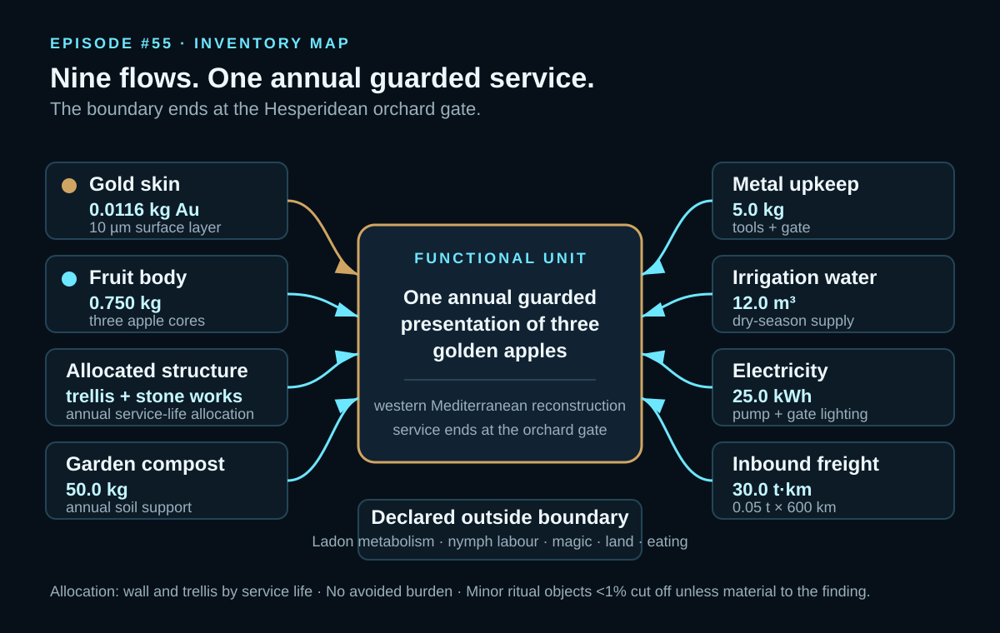
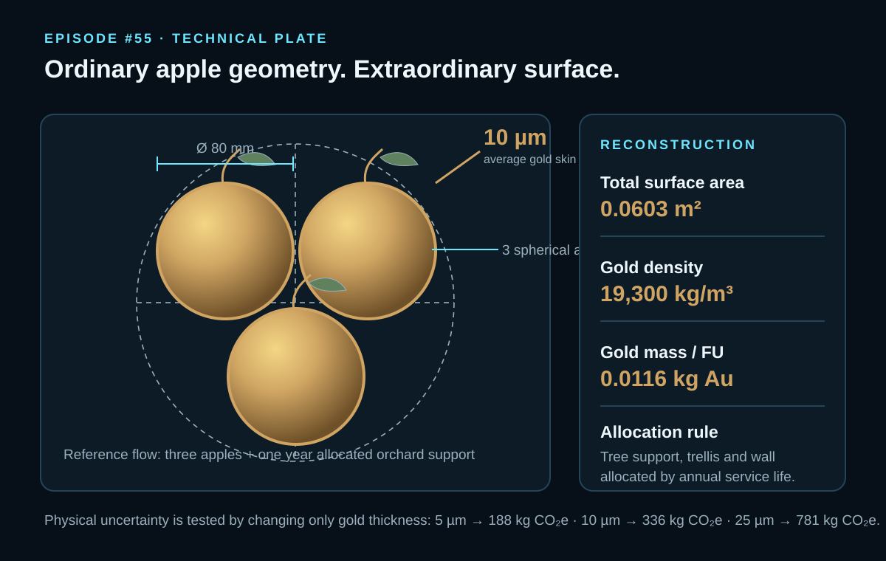
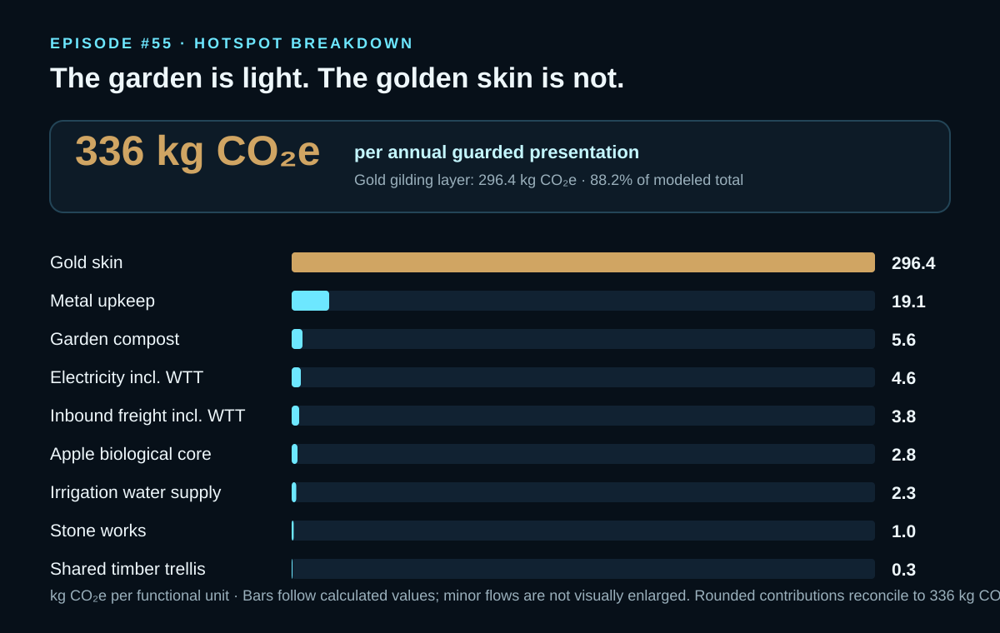

EPISODE #55 · MYTHS & LEGENDS
The Garden of the Hesperides
What is the footprint of immortality when the fruit is not eaten, but guarded forever?
THE SUBJECT
A divine orchard becomes a guarded service.
The approved model does not attempt to quantify immortality, divine ownership or the whole myth. It reconstructs a finite annual service: three golden apples are grown, gilded, guarded and presented at the orchard gate.
The canonical visual subject is a gnarled tree bearing three golden apples with Ladon coiled around it. The narrative supplies the guarded fruit and the dragon. The physical model supplies the measurable reconstruction: three 80 mm apples, a 10 µm gold surface, one year of allocated orchard support and a western Mediterranean sacred-orchard setting.
The boundary ends at the gate. Downstream eating, divine magic, nymph labour, land occupation and Ladon's metabolism are explicitly outside scope rather than silently converted into invented flows.
Three apples
Three spherical apples, each 80 mm in diameter, form the annual reference flow.
Ten micrometres
A 10 µm average gold skin across 0.0603 m² gives 0.0116 kg of gold per functional unit.
Main hotspot
The gold gilding layer contributes 296.4 kg CO₂e, or 88.2% of the modeled total.
Boundary logic
Ladon is treated as the logic of guarding the service, not as an invented fuel consumer.
VISUAL MODEL
From orchard inputs to guarded fruit
The inventory map separates the annual support system from the precious surface that dominates the result.


LIFE CYCLE INVENTORY
Nine flows, one annual service
Activity data, disclosed emission factors and contribution values follow the approved carousel. Where a structural activity quantity is not separately disclosed in the PDF, it remains explicitly undisclosed rather than being reconstructed here.
| Stage | Component / activity | Activity data | Climate change | Modelling basis |
|---|---|---|---|---|
| Fruit | Gold skin | 0.0116 kg Au | 296.4 kg CO₂e | 10 µm surface; primary-gold external proxy 25,463 kg CO₂e/kg from S&P Global. The approved episode notes that this is Scope 1+2 mine intensity and may understate downstream refining. |
| Fruit | Apple biological core | 0.750 kg | 2.8 kg CO₂e | Three apples; DEFRA 2026 Food & drink proxy 3.701 kg CO₂e/kg. |
| Orchard support | Shared timber trellis | Not separately disclosed in carousel | 0.3 kg CO₂e | Allocated by service life; no avoided burden claimed. |
| Orchard support | Stone enclosure / works | Not separately disclosed in carousel | 1.0 kg CO₂e | Annual service-life allocation for the guarded orchard enclosure. |
| Orchard support | Garden compost | 50.0 kg | 5.6 kg CO₂e | Annual soil support; DEFRA 2026 compost factor 0.112 kg CO₂e/kg. |
| Maintenance | Metal upkeep | 5.0 kg | 19.1 kg CO₂e | Tools + gate; DEFRA 2026 average-metals factor 3.822 kg CO₂e/kg. |
| Operation | Irrigation water supply | 12.0 m³ | 2.3 kg CO₂e | Dry-season irrigation; DEFRA 2026 water-supply factor 0.191 kg CO₂e/m³. |
| Operation | Electricity | 25.0 kWh | ≈4.6 kg CO₂e | Small pump + gate lighting; DEFRA 2026 electricity incl. WTT factor 0.184 kg CO₂e/kWh. |
| Logistics | Inbound HGV freight | 30.0 t·km | ≈3.8 kg CO₂e | 0.05 t × 600 km delivery proxy; DEFRA 2026 HGV freight incl. WTT factor 0.127 kg CO₂e/t·km. |
Included
Gold skin, fruit body, allocated trellis, stone enclosure, compost, water, electricity, metal upkeep and inbound freight.
Excluded
Dragon metabolism, nymph labour, divine magic, land occupation and downstream eating are outside the approved boundary.
Cut-off rule
Minor ritual objects below 1% are excluded unless they affect the visual design or the main finding.
Proxy control
DEFRA 2026 is used first for ordinary flows. Primary gold is a separately declared external proxy.
HOTSPOT
A thin surface outweighs the garden
The precious surface treatment dominates a support system that is otherwise small in energy, water and freight.

Main result
336 kg CO₂e
Per annual guarded presentation of three golden apples.
Gold skin
296.4 kg CO₂e · 88.2%
The 10 µm gilding layer is the dominant hotspot.
Ordinary garden
<4%
Water, electricity and freight together remain below 4% of the total.
Metal upkeep
19.1 kg CO₂e
The largest non-gold annual support contribution shown in the approved baseline.
Sensitivity A · gold thickness
5 µm → 188 kg CO₂e
10 µm → 336 kg CO₂e
25 µm → 781 kg CO₂e
Only physical gold thickness changes; the boundary, factors and minor flows remain fixed.
Sensitivity B · gold source
Low source → 139 kg CO₂e
Baseline → 336 kg CO₂e
High ore → 484 kg CO₂e
Only the gold emission factor changes; the same 10 µm skin and orchard inventory are retained.
What survives the myth
The insight is physical rather than supernatural: a precious surface treatment can dominate the climate footprint of a small support system.
What remains uncertain
Gold thickness and gold-source intensity are both consequential. The external baseline factor is explicitly a mine-intensity proxy rather than a complete refined-gold life-cycle dataset.
THE VERDICT
A thin golden surface can outweigh the whole garden. In this reconstruction, immortality is outside the boundary; material intensity is not.